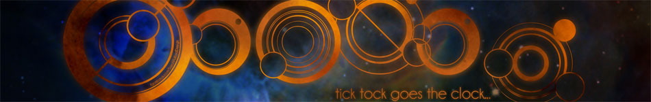

| Home | The Doctors | The Companions | The Villains |
|  | |||
AzalAzal is the Dæmon from the planet Dæmos that terrorises Devil's End in the Third Doctor story The Dæmons. Summoned by the Master, Azal has a gargoyle, named Bok, as a servant. Azal landed on Earth over a million years ago and did help in the development of mankind. Azal is awakened by an archaeological professor, Professor Horner, who is digging out the cave at Devil's Hump that is a part of Azal's ship. Azal creates a heat barrier around Devil's End. He had contact with the Master though the ceremony with the Master's coven. (He is summoned by use of magic incantations and the phrase, shouted in a rising cadence by the Master, "ecoh, ecoh, Azal!") The Master wants Azal's power. He wants to give it to the Doctor, but the Doctor refuses. Then Azal decides to give the Master his power and destroy the Doctor. Jo Grant tells Azal to kill her instead. Azal, not understanding her willingness to give her own life for someone else's, is thus destroyed when his own power turns against him in his confusion, and destroys himself and his ship at the dig at Devil's Hump. Events at Devil's End return to normal, the heat barrier goes and Bok is a normal statue again. |